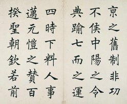

BBQ
Kamado Joe Classic III may have a steep price, but it delivers plenty for the money. That means lots of kamado grilling accessories that don't come standard with other grills, including the Big Green Egg Kamado. This kamado grill and smoker performs well too. In our slow-and-low barbecue grill test, we adjust grills to 225 F (107 C) and let go of the controls to see what happens. In this trial, the Kamado Joe Classic III demonstrated excellent temperature control.
Writing

Chinese calligraphy is a form of aesthetically pleasing writing (calligraphy), or, the artistic expression of human language in a tangible form. This type of expression has been widely practiced in China and has been generally highly esteemed in the Chinese cultural sphere (including, historically, for example, Japan, Korea, Taiwan, and Vietnam).